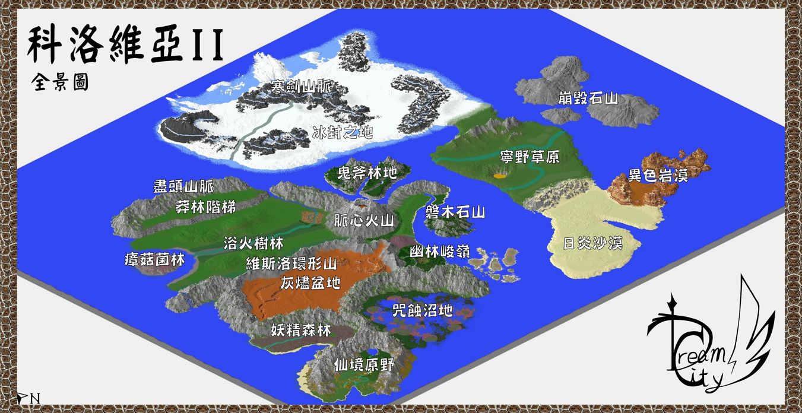
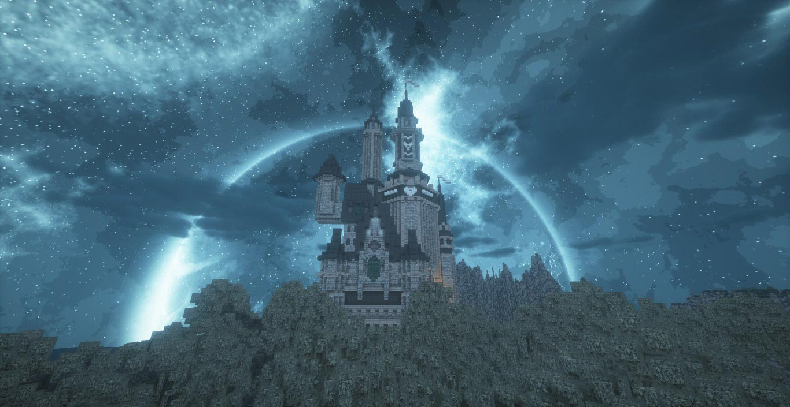
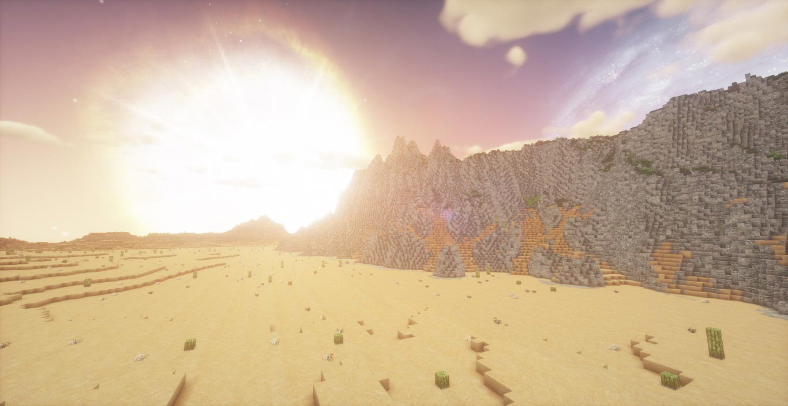
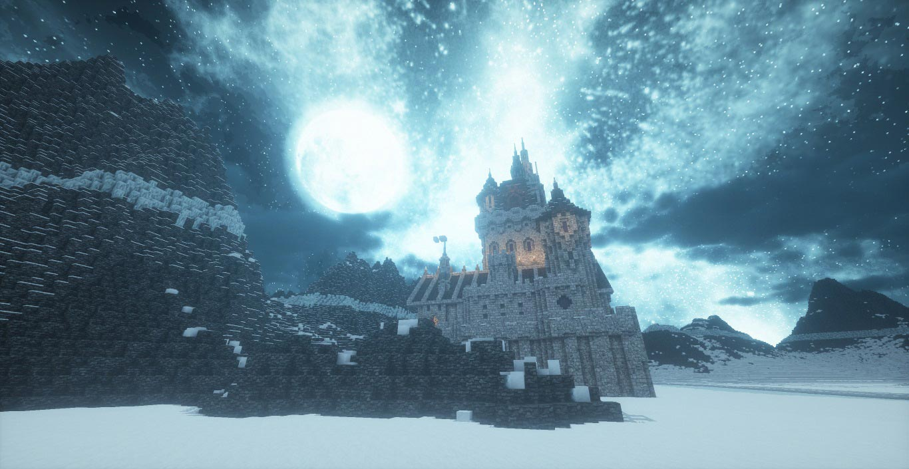
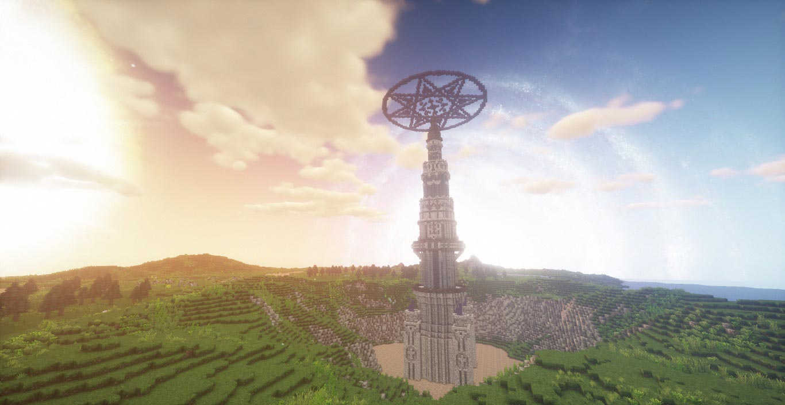
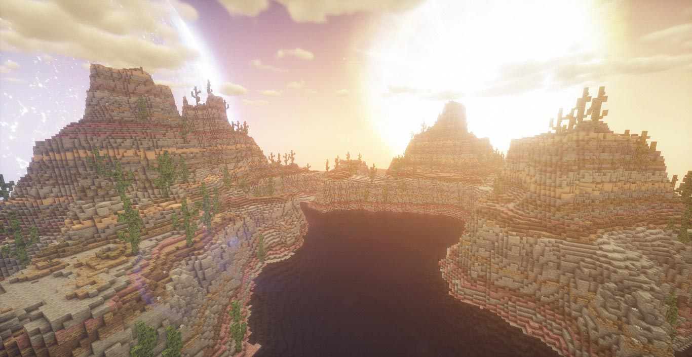
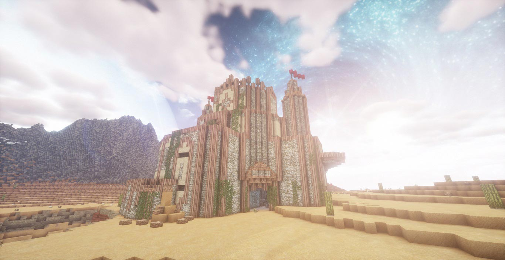
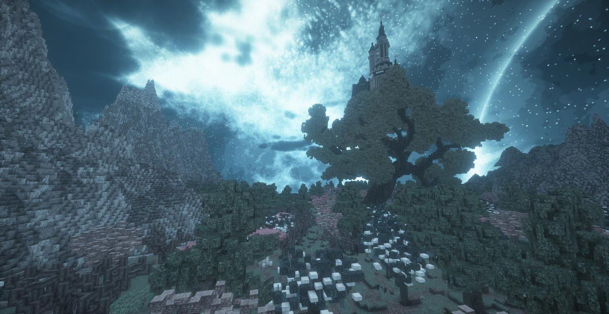
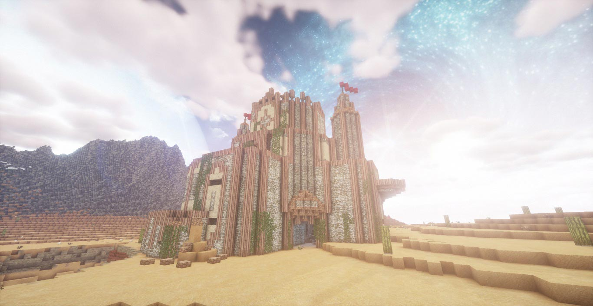
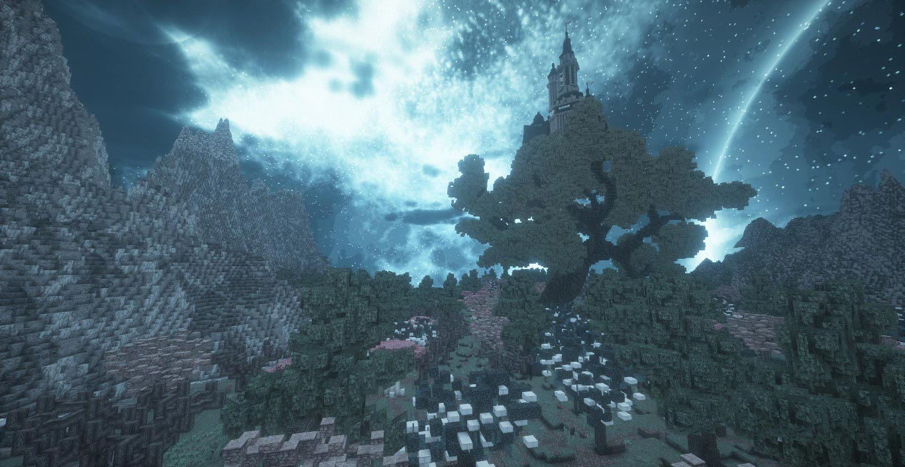

地圖前導片
米格的話
 Hello 各位親愛的MC玩家，我是夢想之都工作室的團員兼顧問－米格。
Hello 各位親愛的MC玩家，我是夢想之都工作室的團員兼顧問－米格。
今天帶來我的個人作品《科洛維亞大陸II》
這是一張非常巨大的開闊世界地圖，是上一代版本《科洛維亞》的2～3倍大，你可以把它當成一張預設的生存地圖，也可以用來開服建築，以這地圖的大小來說，在裡面蓋10座RPG遊戲主城都不是問題。當然我還是建議你在這裡面進行你的精彩生存冒險，如果你有實況，請務必告訴我，我會很開心的！
地圖資訊
- 類型：大型生存
- MC版本：1.12.2
- 地圖版本：V1.1
- 最後更新：2018-03-11
製作人員
- 建築：米格
- 企劃：米格
- 技術：米格
- 特別感謝：Nick
地圖特色
- 革命性的自訂系統：取消原有的飢餓系統,改為吃食物直接回血
- 非常多的自訂生態系
- 非常多的自訂洞穴
- 非常多的自訂樹木
- 自訂NPC村莊,礦坑,遺跡,地牢,要塞(取代原版的建築)
- 世界各處分佈著大大小小的寶箱,團員彩蛋
世界地圖

遊戲場景
-

 

成就列表
- 建立一個完整據點
- 探索一個自訂洞穴
- 得到小漁港船頂上的小道具
- 開闢廣闊的農田
- 養10隻以上動物
- 探索任意遺跡
- 得到虛空之劍
- 找到瘴菇菌林的商人
- 殺死一隻在幽林峻嶺的叢林神廟中隱形的無敵怪物
- 召喚並殺死凋零怪
- 攻略灰燼盆地中的沙漠城堡
- 攻略妖精森林的巨樹之城
- 攻略浴火樹林中的神秘大宅
- 攻略寒劍山脈中的城堡
- 摧毀咒蝕沼地中的女巫小屋和海岸中的海盜船
- 前往終界屠龍
- 找到3個以上團員彩蛋
- 用地圖記錄整座大陸
- 得到武器：日蝕丶月蝕
- 建造烽火台
簡易
進階
困難
注意事項
- 多人遊玩請務必安裝「地圖內建的指定材質包」
- 這地圖很大,如果一人探不完可以組團玩也沒關係
- 如果是正常生存冒險建議２～４人,當然老手玩家單人也可以
- 若是伺服器使用，請務必標註地圖來源：夢想之都工作室 Mega
- 玩家起始出生點為仙境原野
- 請勿打指令更改世界重生點
玩家留言
版權聲明
您若使用本地圖製作個人作品或二次創作，
則視同您同意本工作室無償使用您的作品，作為行銷目的使用。
此頁面圖片、影片皆為夢想之都工作室所有，若用於個人作品或二次創作
請於使用時，於使用處標註本網站！